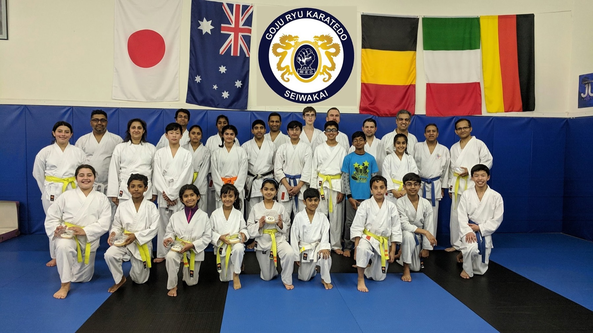
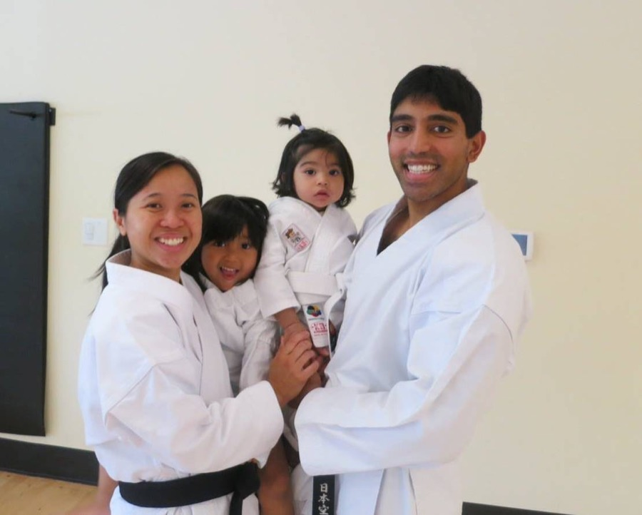
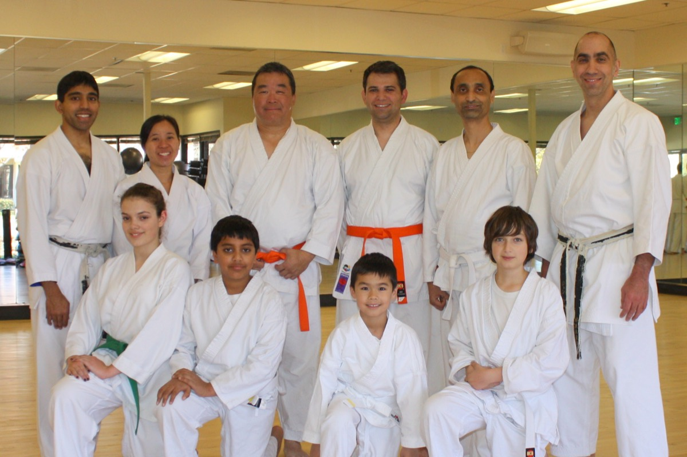
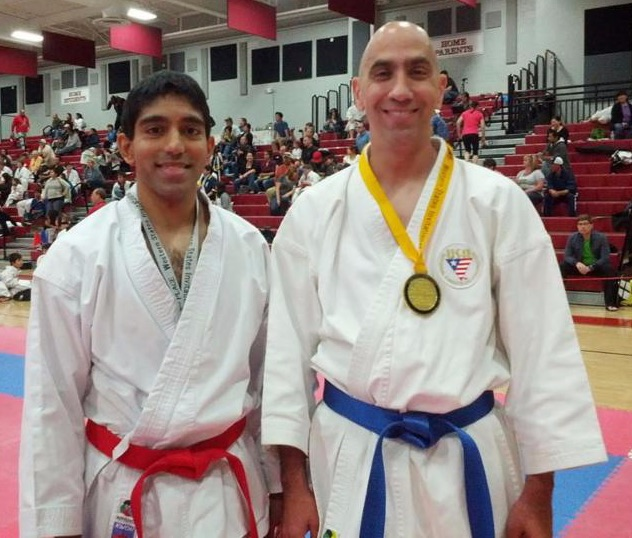

Strength & fitness
Conditioning, core strength, balance and endurance. A real workout that builds week by week.
Pleasanton · Kids 6+, Teens & Adults
Traditional Goju Ryu karate in a safe, friendly dojo. No experience needed and you don't have to be in shape. We'll get you there together, one class at a time.

We're a traditional dojo with a warm, family feel. Parents train alongside their kids, beginners train alongside national champions, and everyone gets real attention from Sensei.
Conditioning, core strength, balance and endurance. A real workout that builds week by week.
We stretch in every class, with yoga-style poses, so everyday things like lifting your kids or groceries get easier.
Respect, self-control and focus, practiced on the mat and carried into school, work and home.
Small classes, a close-knit group and 30% off for a second family member. Train together.
Nine Tri-Valley Karate athletes, ages 9 to 17, competed in Fort Worth, Texas.
Every student is welcome to try a class first, so you can see if it's the right fit.

A focused, fun class just for kids, built on etiquette and good habits as much as kicks and punches.

Get in shape, de-stress and learn a complete martial art. It's never too late to start: our students range from teens to their 70s.
Train up to three times a week. For kids, we suggest twice a week to see steady progress.
No surprises and no contracts. Pick the plan that fits your life.
Call or text 925-272-8348 for current monthly rates. Belt promotions are held every 4 months, after about 30 classes. Passing isn't automatic. You earn it!
Over 60 years of combined karate experience, and a real love of teaching beginners.

Sanjit started martial arts in 1988 and began Goju Ryu a year later under Sensei Hiroshi Sakumoto, training four to five times a week. He earned his first-degree black belt at 15 and his second at 17, competing in kata and kumite as a junior.
When his Sensei passed away in 1997, Sanjit was inspired to keep training and to teach. At 19 he founded the Northeastern University Goju Ryu Karate-do Club in Boston, coaching students to national titles and over 250 medals, ahead of schools like Harvard, MIT and Brown.
He has tested before panels of senior JKF masters in Japan, Mexico and the U.S., earning his 5th dan in both the All Japan Karatedo Federation Goju Kai and Goju Ryu Karatedo Seiwakai in 2018. Often the oldest competitor in his division, he keeps competing to show that quality of training matters more than age.
His teachers include:
Parents, kids and adults of every age.
We are very lucky to have a dojo like yours in Pleasanton.
Pleasanton motherI really like your teaching style and enthusiasm. The class size is not very large so one gets really good attention to details from Sensei. Your patience for novices like me is commendable.
Pleasanton engineer & dadKarate is my best insurance against aging. Training with kids a third of my age is truly challenging and gratifying. Try it and you won't regret it.
Romy Olea, Sandan, age 58Outstanding instruction. Dedicated, trustworthy and competent instructor.
Pleasanton physician (dad & son both train)My daughter changed from a different style of karate when we moved to Pleasanton. Thanks to Sensei, who made her comfortable in her first class, she quickly adapted.
Pleasanton motherI never think of age as a factor. You are as young or as old as your mind tells your body. Karate has been a great benefit in keeping me fit.
Joe Palminteri, Shodan, age 76Supportive environment, close-knit group and awesome instruction.
Contra Costa County deputy & dadOur style
Goju Ryu comes from Okinawa, where Chojun Miyagi blended Okinawan karate with Chinese martial arts. It's a close-range style that balances power with flowing movement and focused breathing. We're proud members of the All Japan Karatedo Federation Goju Kai and Goju Ryu Karatedo Seiwakai, one of the largest karate organizations in the world, headquartered in Japan.
Hard: strength, speed and powerful technique from the hips.
Soft: circular movement, breathing and flexibility.
Still curious? Call or text us at 925-272-8348.
Not at all! Beginners are welcome. Most of our students had never done martial arts before, and if they had, it was years ago.
No, we'll get you in shape. Classes start slow so you can learn the basics. Just be ready to work up a sweat.
Age isn't a factor. Goju Ryu focuses on breathing and coordinating it with your movements, and we stretch at the start and end of every class. Many students say they feel younger within a few weeks.
Our Youth classes are for ages 6 to 10. Kids 6+ can also join adult classes at Sensei's discretion, case by case, since every child is different. We encourage every child to try a class first.
Loose, comfortable clothing, sandals for walking to the mat, and a full water bottle. If you already have a plain white uniform (gi) from another school, you're welcome to wear it without patches. Please arrive 15 minutes early on your first day.
Maybe. Ranks vary from one dojo to another, and we keep a high standard. Talk with Sensei before your first class and we'll figure out what's fair.
Promotions are held every 4 months, after about 30 classes. How fast you progress depends on how often you train, in class and at home.
"Karate is like boiling water. If you do not heat it constantly, it will cool." — Gichin Funakoshi
Absolutely. Women excel at karate on a level equal to men. The only place men and women are separated is in tournament divisions.
Safety is our top priority, and we have a great track record of keeping members injury-free. You may get the odd bump or bruise from conditioning or sparring, but rarely anything more. Our training actually helps prevent injuries as we age.
"Karatedo" means "the way of the empty hand." Both arts use hands and feet, but Goju Ryu focuses on closer range, using hands, elbows and knees more. If you've done taekwondo, you're welcome here! You'll still get plenty of chances to kick.
Send us a note and we'll help you pick the right class. Or just call or text. We love hearing from new students.
Proudly serving Pleasanton · Livermore · Dublin · Danville · San Ramon